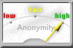
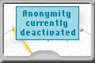
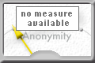
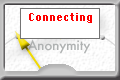

|  | Je mehr Benutzer in einer Kaskade aktiv sind und je mehr Daten versendet werden, desto höher ist die Anonymität.
Der Zeiger gibt einen ungefähren Wert für die Anonymität an. |
|  | Dieses Bild erscheint, wenn die Anonymität ausgeschaltet ist. Abhängig von der Einstellung, die Sie hier getroffen haben, wird dabei der Verkehr ins Internet kommentarlos blockiert oder nur nach Bestätigung zugelassen. |
|  | Wird dieses Bild gezeigt, wurde eine Verbindung zum Dienst hergestellt und Sie können auch anonym surfen, jedoch konnten vom InfoService keine Informationen über Anzahl der Nutzer und Verkehr geholt werden. Das kann auf einen Fehler im InfoService hindeuten. |
|  | Wenn beim Start von JAP nicht automatisch eine Verbindung hergestellt werden konnte, oder wenn die Verbindung zum Dienst unterbrochen wurde, wird dieses Bild gezeigt während JAP versucht, wieder eine Verbindung herzustellen. Währenddessen wird jede Verbindung über JAP zum Internet blockiert. |